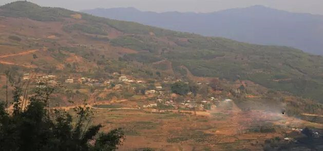

交易中心
交易中心
 交易指南
交易指南
 普洱档案
普洱档案
 普洱资讯
普洱资讯
 下载中心
下载中心
 活动频道
活动频道

【勐库茶区】勐库西半山中著名的几个茶区
2016-01-13 11:08 来源：蒙顶山普洱

公弄是勐库最古老的村寨，是古代濮人的居住地，位于邦马大雪山延伸的一条山脉上，海拔不高，但视野开阔，出了家门就能看到邦马大雪山！公弄寨头有一颗6人合抱的寨心树（大青树），已有千年，1949年以前茶园面积就有2000亩以上，公弄除了普洱茶还有古树红茶，滋味也不错~
说到公弄茶区，其中一个寨子名气很大，那就是小户赛，与公弄大寨相隔，有土公路，约12公里，由三个寨子组成，两个拉祜族寨：梁子寨、洼子寨，一个汉族寨—以寨，有两条溪流流经，一条穿过寨子的叫茶山沟，一条寨子旁的叫茶山河。
梁子寨的古茶园是双江勐库保存最好的，树围超一米的古茶树成林的至少300亩以上，最大的几株可能是明朝或者更久远，据说，小户赛的铁姓拉枯族人总说自己是蒙古人...

懂过茶区
懂过与大户赛遥相对望，是勐库西半山最大的寨子，由四个自然村组成，现今懂过茶园面积已超过5700亩，是西半山茶园面积最大的村委会，但过去懂过地理位置不佳，造成交通不便，了解的人很少。
懂过的茶王树树围超过160cm，应该是明朝时留下来的。

大户赛茶区
沿着公弄的豆腐寨（中户赛）约5公里就来到了大户赛，大户赛的知名度更高，去邦马大雪山看野生茶林和茶王一般都从大户赛进去，大户赛的拉祜族人汉话讲的一般，但英文圣经歌唱的很流利！
大户赛的毛茶晒干后乌润光亮，茶汤明黄透亮，买的人多，制作红茶品质也较好。

坝卡茶区
坝卡与懂过村委会的坝气山寨子隔河相望，海拔有近2000米，由三个寨子组成，上寨、中寨、下寨，下寨后面有一片100多亩的竜林，生态环境很好。坝卡有茶园1500多亩，但老茶园仅有100多亩。
关于坝卡，有一点值得大家注意，因为交通不便，宣传力度不够，茶叶价格就一直较低，但坝卡和冰岛是在一条山脊上的，距离很近，茶叶味道也相似，而近年冰岛茶价很高，所以茶商们就把坝卡的茶拉到冰岛去卖......

冰岛茶区
冰岛亦称扁岛、丙岛，是近年来知名度猛涨的茶区，100多年前是个傣族寨子，由勐勐土司管辖，罕廷发时期（1485年）引版纳茶种到冰岛，开创了冰岛茶在勐库地区的声誉，近几年广东、香港及韩国人的热捧都推动了冰岛茶的名声！
说起冰岛茶来还是很有意思的，冰岛村委会分为两半，南勐河东面的山叫东半山，西面的叫西半山，坝歪老寨、糯伍老寨属于东半山，冰岛老寨、南迫、地界属于西半山，就是说，冰岛茶既有东半山的也有西半山的，也可以细分为冰岛老寨的还是冰岛村委会的。
冰岛南迫老寨现存一棵勐库地区最大的人工栽培型古茶树，树高有三层楼，树围超三米，南迫老寨还有上百亩的古茶园，其中最大的十来棵古茶树大小都超过冰岛老寨的茶树，老寨属于搬迁寨，由于有茶园和核桃园，寨子里还有十多户拉祜族人没搬，人少茶多，所以他们把鲜叶背到冰岛老寨去卖。

丙山茶区
丙山，1960年前叫邦丙，是邦骂和丙山的合称。丙山村委会下辖邦骂大寨、丙山上寨、下寨、滚上山等自然村，各个寨子的茶园连在一起，难以区分，有上千亩的新茶园，修剪的很是规整，是勐库高产新式茶园的代表，但老茶园还是有不少的。
坝卡和冰岛是在一条山脊上的，距离很近，茶叶味道也相似，而近年冰岛茶价很高，所以茶商们就把坝卡的茶拉到冰岛去卖......
冰岛南迫老寨现存一棵勐库地区最大的人工栽培型古茶树，树高有三层楼，树围超三米，南迫老寨还有上百亩的古茶园，其中最大的十来棵古茶树大小都超过冰岛老寨的茶树，老寨属于搬迁寨，由于有茶园和核桃园，寨子里还有十多户拉祜族人没搬，人少茶多，所以他们把鲜叶背到冰岛老寨去卖。

- 关于普洱茶的“四喜四怕”2016-01-13
- 品天外之韵,追那卡之香2016-01-05
- 有一种普洱,昔归相识少！2016-01-05
- 有一种圣诞节的浪漫，叫陪我喝杯茶2015-12-24
- 勐库十八寨 —大雪山2015-12-24